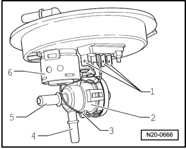

Multiport Fuel Injection (MFI)
Fuel Pressure Regulator and Residual Pressure, Checking
Special tools, testers and auxiliary items required
• Pressure gauge (V.A.G 1318)
• Adapter (V.A.G 1318/9)
• Multi meter (V.A.G 1715)
• Pliers for spring type clips (VAS 5024 A)
• Diesel extractor (VAS 5226)
• Adapter (V.A.G 1318/20)
• Adapter (V.A.G 1318/20-1)
The fuel pressure regulator maintains the fuel pressure at a constant 4.0 bar.
Test conditions
• Fuel pumps delivery rate OK., checking: --> [ Fuel Pumps, Checking ] Fuel Pumps, Checking.
Test Sequence
- Thread adapter (V.A.G 1318/20-1) onto adapter (V.A.G 1318/20).

- Turn valve on T-piece of adapter (V.A.G 1318/20) counterclockwise until completely open.
- Remove breather valve.
- Connect pressure tester (V.A.G 1318) to breather valve - 1 - as shown using adapter (V.A.G 1318/20), (V.A.G 1318/20-1), (V.A.G 1318/9) and diesel extractor (VAS 5226).

- Cut-off tap of pressure tester - arrow - must be close.

- Start the engine and run at idle speed.
- Screw valve on T-piece of adapters (V.A.G 1318/20) clockwise into bleed valve to stop.
- Open cut-off tap of pressure tester briefly and close again to bleed line to pressure tester.
- Measure fuel pressure. Specified value: approximately 4.0 bar positive pressure
If the specification is not obtained:
- Check delivery rate of fuel pumps: --> [ Fuel Pumps, Checking ] Fuel Pumps, Checking.
- If necessary, replace fuel pressure regulator - 2 -.

If specified value is achieved:
- Switch off ignition.
- Check for leaks and residual pressure. Observe pressure drop on pressure gauge. After 10 minutes there must be a residual pressure of at least 3.0 bar.
If the residual pressure drops below 3 bar:
- Check pressure gauge for leaks.
- Check fuel pump non-return valve --> [ Fuel Pumps, Checking ] Fuel Pumps, Checking.
When removing the pressure gauge after completing the test:
- Switch off ignition.
- Open cut-off valve of pressure tester to release fuel pressure.
- Remove pressure gauge with adapters.
- In addition, wrap a cloth the around connection to catch fuel which runs out.